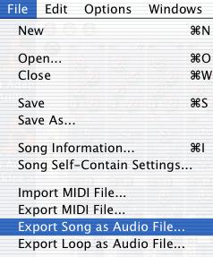
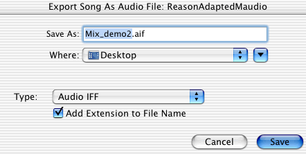
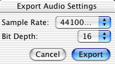

Recording a performance to disk is only one way of making an audio file. We can take any of our recorded tracks or MIDI tracks that play back using virtual instruments and render them to a new audio file in a process called bounce to disk. When we make a new file this way, we'll be taking the mixed and processed audio data from our master output and use it to create a new audio file. This will include all audio tracks, audio instrument tracks, and any channel insert plug-ins we've used, as well as any of the audio busses we've routed to our main mix outputs.
Once we've recorded, edited, and mixed a song in an application like Reason, we'll want to make a mixed stereo file. In a multi-track, tape-based system, we'll typically record the main mix outputs of a mixing board to a stereo record deck, often a DAT recorder. We could do this with a hard-disk system as well. However, since we'll ultimately need an audio file to distribute our song as either a CD or an MP3, the bounce to disk function is the easiest way to accomplish this.
1. Download and open the file Mix_demo2.rsb. This is the same tune we used to demonstrate mix basics. Feel free to use any other Reason song that you're working on. Play the file and you'll hear a good, basic mix.
2. Before we bounce to disk, we'll need to set the song's end time in the Reason Sequence window. This determines how long the bounced file will be. If you're using reverb or delay, as we are in this example, make sure to leave an extra measure or two at the end to allow the sound to completely decay. We'll use Audacity to trim the beginning and end of the file.
Setting the end point of a Reason song at measure 48.
3. Choose Export Song as Audio File from the File menu.

4.Name the file and choose a file format. For our purposes, we can use either Audio AIF or WAVE. Remember though, if the file is going to be played on a PC at some point, you'll want to save it as a .WAV, since that's the native PC audio file format. In either case, choose Add Extension to File Name.

5. Since we'll be using this file to make an audio CD, choose the CD standard, 16-bit, 44.1 as the bit depth and sample rate. Choose Export and Reason will write a new audio file to disk.

{kind=link}